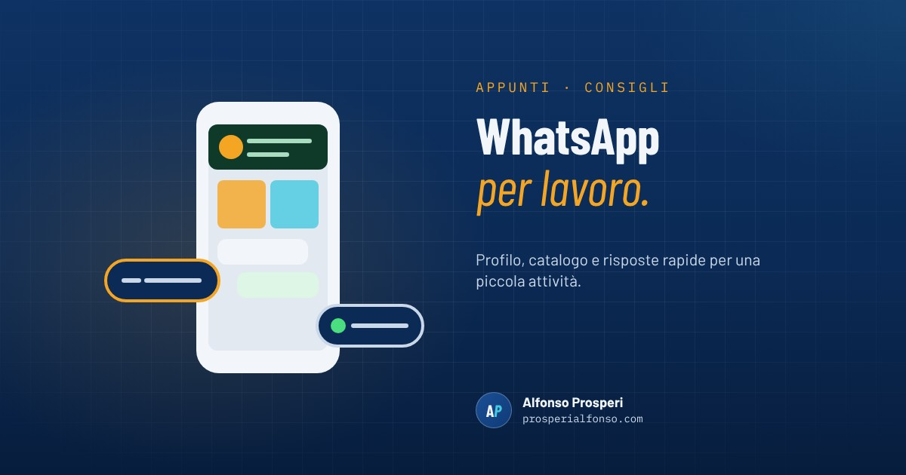

Se usi WhatsApp anche per lavoro, con clienti, fornitori o prenotazioni, conviene separare le cose. WhatsApp Business è l'app gratuita pensata per chi ha un'attività: funziona come WhatsApp, ma aggiunge strumenti per rispondere meglio e farsi trovare.
Le funzioni più utili
- Profilo aziendale con indirizzo, orari, sito, email e una breve descrizione.
- Catalogo: foto, prezzi e descrizioni dei prodotti o servizi, da mandare con un tocco.
- Risposte rapide: testi salvati per le domande frequenti, che richiami scrivendo "/" e una parola.
- Messaggi automatici di benvenuto e di assenza fuori orario.
- Etichette per ordinare le chat: nuovo cliente, ordine in corso, da pagare.
- Link e QR code per aprire la chat con la tua attività, da mettere sul sito o in vetrina.
Come iniziare
- Scarica WhatsApp Business dal Play Store o dall'App Store.
- Usa preferibilmente un numero dedicato all'attività, così il WhatsApp personale resta separato. Sullo stesso telefono, con una seconda SIM o una eSIM, possono convivere le due app.
- Compila il profilo con orari e indirizzo e prepara due o tre risposte rapide.
- Attiva il messaggio di assenza per le ore di chiusura.
Usarlo senza disturbare
- Scrivi ai clienti solo se ti hanno dato il numero per quello scopo.
- Per le comunicazioni a più persone preferisci liste di trasmissione o canali a cui ci si iscrive volontariamente, non gruppi in cui i numeri sono visibili a tutti.
- Rispetta gli orari: il messaggio di sera tardi raramente fa una buona impressione.
E per le aziende più grandi?
Per chi gestisce molti messaggi esiste la piattaforma WhatsApp Business (le API), che si collega ai gestionali e permette a più operatori di rispondere. È un servizio a pagamento, di solito attivato tramite fornitori specializzati. Per un negozio o uno studio, l'app gratuita è più che sufficiente.
Per tenere i contatti con i clienti funziona bene anche una newsletter: ne parlo nella guida all'email marketing.